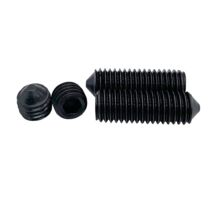

Механика
Винт установочный DIN914 М3×12
Винт установочный DIN 914 M3×12 — это безголовочный стопорный винт с внутренним шестигранником и коническим концом для фиксации деталей в отверстии или на валу. Обычно используется в машиностроении, крепеже шкивов, муфт, ручек и других узлов, где нужна скрытая фиксация.

Документация
Каталог Bossard: винты установочные с коническим концом DIN 914 / ISO 4027Каталог Bossard: альтернативная карточка DIN 914 / ISO 4027Справка по стандарту DIN 914 / ISO 4027
Характеристики
Стандарт
DIN 914 / ISO 4027
Тип
винт установочный без головки
Размер резьбы
M3
Шаг резьбы
0,5 мм
Длина
12 мм
Наконечник
конический
Привод
внутренний шестигранник
Материал
сталь (типовой вариант)
Твёрдость
45 H (типовой вариант по каталожным данным)
Подробнее
DIN 914 относится к винтам установочным с коническим концом; для этого типоразмера M3 шаг резьбы составляет 0,5 мм. Формат M3×12 означает метрическую резьбу M3 и длину 12 мм, измеряемую от торца до конца винта. Такие винты затягиваются шестигранным ключом и работают как фиксирующий элемент, вдавливаясь конусом в материал или в посадочную поверхность. По стандарту это винт без головки, поэтому он не предназначен для обычного силового соединения на растяжение.
hw-2026-102